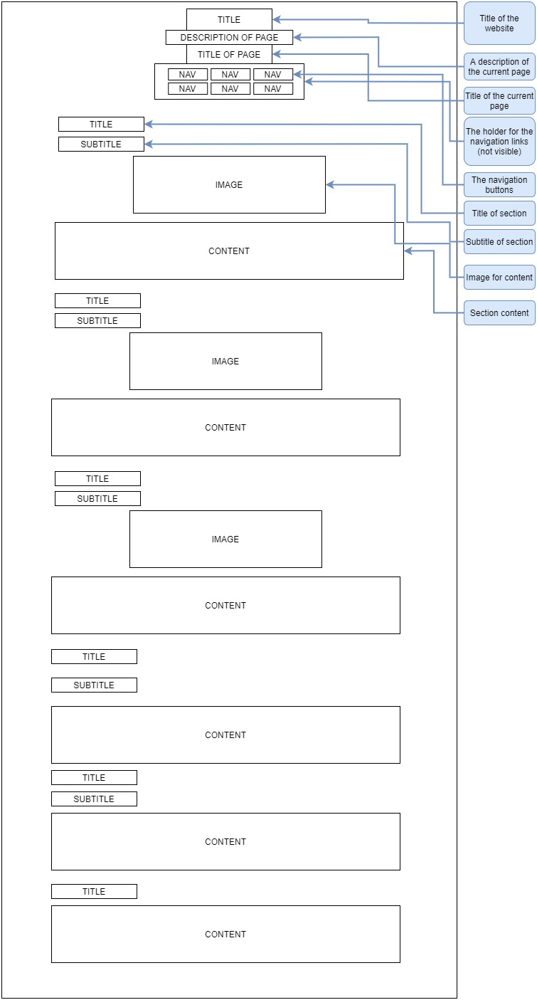

The Colour Palette
The Font Selection
GILL SANS
GILL SANS
GILL SANS
The Home Page

The About Page

The Art Page

The Blogs Page

The Individual Blog Pages

The Design Page

The Individual Design Pages
Wireframes

Design Decisions

UX and UI

Inspirations
Reflections
The Contact Page

Comparing Current Site Design to Previous Website
For overall site-wide changes, there are many.
-
The Colour Palette
I decided that the usage of pink was too overbearing on the site as a whole. It seemed too bright for the minamilist aesthetic that I was going for, and it made the top navigation bar of the site stand out too much. I changed the colour palette to light lavender greys and purples, I found this colour much more suitable to my chosen minimalist aesthetic. I also chose to keep the usage of colour on each page to a minimum.
-
The Font
I did not like the boldness of the previous font choice, I liked that it was readable, but it did not feel minimalist. The font looked like it stood out too much, especially when used in larger font sizes for headings and titles. I changed to my current font style because it was thin and simple and elegant. It is readable, but does not take up much space or stand out too much.
-
The Navigation Bar
Initially, I liked the fixed navigation bar on the previous website, but in retrospect, it seemed like it took up too much space on the webpage, it is quite large and it stands out a lot. There is also a lot of distance between the first navigation button and the last one, this takes away from my aim of ease of user interface. Arranging the new navigation in a 2x3 grid allows all of the buttons to be close together and easy to reach. The navigation interface now does not have a background colour, because I do not want it to take up too much space, but it is still visible and clear to the user.
-
The Logo Removal and Title Change
I found that the logo of the previous webpage did not communicate the purpose of the page very well, and the title was very generic. I removed the logo because I felt it was not necessary and I wanted to communicate minimalism most of all. The title is now less words, and is specific to my own portfolio.
The Home Page

The previous home page was littered with a lot of information, there is a pro of the user being able to guage the content of the website as a whole, however I was trying to aim for minimalism, and I decided that this did not convey the minimalist aesthetic that I wanted. For the new home page, there is no extra information, it is only a landing page to introduce the user to the site with an image and the navigation bar present.
The About Page

I changed the About page to look more professional for this website. I found that there was too much colour on the previous about page, there are many elements and they could all be distracting to the user. I put my art on the old about page, but it was not a page for art, the art page is the page for art. I decided that there was no reason for art to be on the about page. The about page on this new site contains only information about me, there is only text and no blocks of colour, it allows the user to only focus on the information that I am presenting to them.
The Art Page

While I did like the old art page, I did want to take away the pink background, and I also wanted to experiment with metaphor design for user interfaces. I love art books and find it a nice way to explore the art of my favorite artists, and so I wanted to create a virtual art book experience using javascript. While the gallery-grid design of the previous art page was good, and might be a design I decide to revert back to for future iterations, I like the experimentation I did for the new art page and I am happy that I changed it from the old design.
The Blogs Page

I kept the blogs page with the list of blogs very similar to the previous version, but I did change the colour palette, which I found more effective in communicating minimalism. I also added descriptions to the different blog listings so that the user could see a small preview of what the blog would be about. I also decided not to make the different blog listings stretch across the entirety of the page, they are still lengthy, but the space is utilized more with the description in this new website.
The Blog Post Pages

I changed the position of the title of the blog posts on the individual blog post pages to the position of the title of the entire page for the new website. I did this because the title was taking up too much space on the previous website. I also removed the large "blog post" text because I felt that the user would already know that they are on a blog post page, and it was not necessary to reiterate that information. I also removed the large coloured block on which the blog content sat, and changed it to just a white background. This was to be consistent with the rest of the site and to further communicate minimalism.
The Design Page

The previous design page was an embedded pdf document, which, while effective, was not very cohesive with the rest of the site design. I changed the design page on this new site to a blank page with a list of buttons to navigate to the pages that make up the style guide. The new style guide is now consistent with the style of the rest of the website, all of the information is divided into navigable pages, all accessible from the main design page.
The Contact Page

The old contact page took up a lot of space, but conveyed very little information. There is also an example of my artwork on the old contact page, but it does not need to be there. I changed the different links to social media sites into small blocks with links underneath minimal images, so that the page was not too bland. I find that pursuing minimalism does not need to make the pages boring, and so I added the little image designs to make the page a little more interesting and to separate the three contact links. I also removed the block of colour that existed on the old page, to be consistent with the rest of the site design.